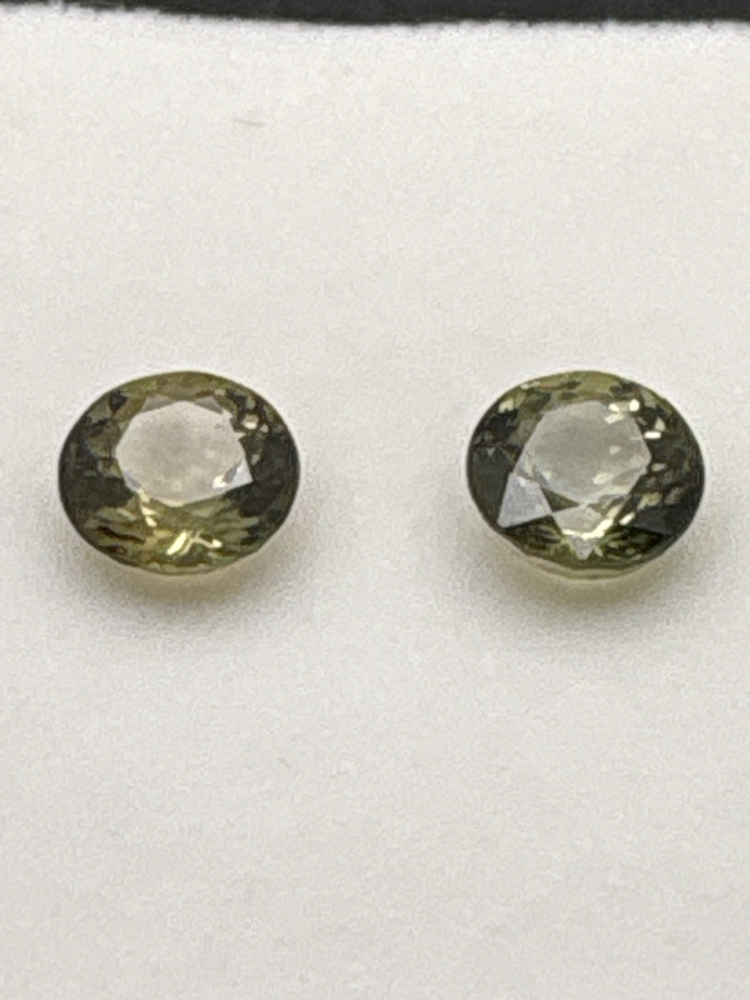

The Gem Drawer › No. 28

Two pale olive-green tourmaline rounds, 7 mm each.
| Catalogue no. | #28 |
|---|---|
| As labeled | Nigerian Green Tourmaline (PAIR - 2 stones in this box, see notes) |
| Shape / cut | Round |
| Weight | 1.4 ct |
| Measurements | 7mm round (each, presumed) |
| Colour | Pale yellowish-green / olive |
| Clarity / condition | Not recorded |
Interested in this stone, or in the collection as a whole? Terry VanWormer can answer questions about it.
Click here to inquireor email Terry directly at maxrebo34@gmail.com